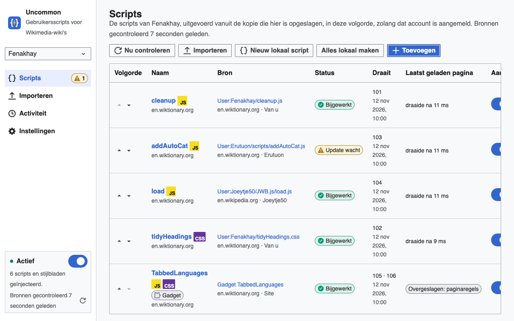
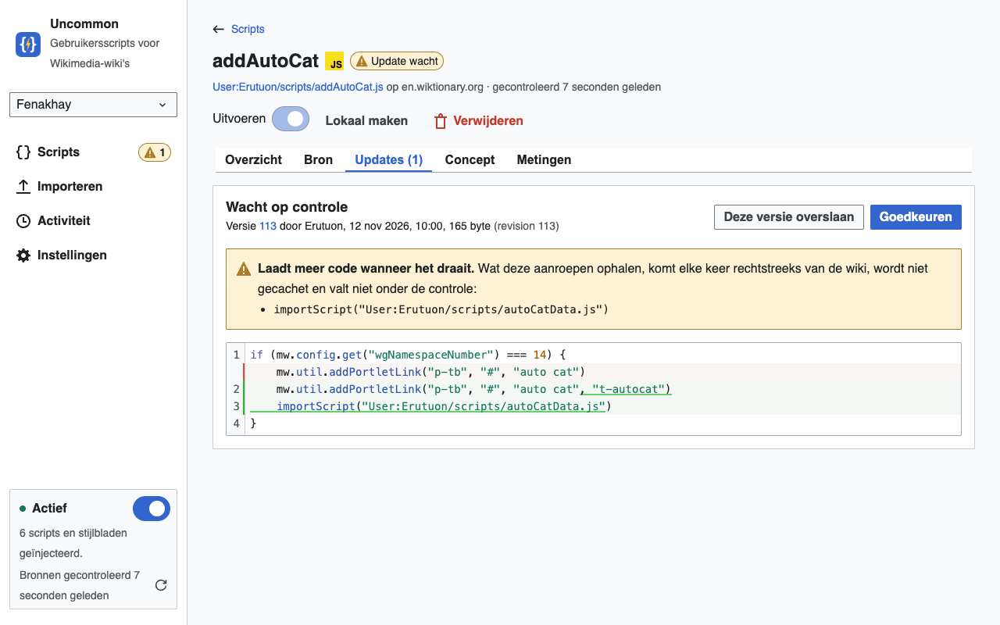

Installeren
Binnenkort in de Chrome Web Store, bij Firefox Add-ons en bij Microsoft Edge Add-ons.
Uncommon voert uw gebruikersscripts en stijlbladen voor Wikimedia uit vanuit een kopie in uw browser, in plaats van uw common.js.
Een script uit common.js wacht bij elke paginaweergave op een reeks verzoeken: de pagina, de startmodule, de module user en nog een verzoek voor elke importScript. Uncommon bewaart de tekst van elk script in de browser, die het injecteert voordat de eigen scripts van de pagina draaien. Het script wacht alleen op wat het van de pagina nodig heeft, en voor het script zelf wordt geen verzoek gedaan.
- Profielen: één voor elk wiki-account. De scripts van een profiel draaien alleen zolang dat account is aangemeld, op de wiki's die u kiest: één, enkele of alle Wikimedia-wiki's.
- Importeren: leest uw common.js, common.css, global.js of global.css, somt elke pagina op die deze laadt en voegt de gekozen pagina's toe.
- Updates: uw eigen pagina's volgen de wiki zodra u opslaat. Een versie van een andere bewerker wacht tot u de diff hebt gelezen en goedgekeurd; intussen blijft de goedgekeurde versie draaien.
- Gadgets: voeg een gadget van uw thuiswiki toe als één vermelding, met de scripts en stijlen ervan.
- Concepten: probeer een wijziging in de browser uit voordat u haar op de wiki opslaat.
- Paginaregels: voer een script alleen uit in bepaalde naamruimten, acties, speciale pagina's of inhoudsmodellen.
- Activiteit: zie wanneer elk script draaide bij de laatste 200 geladen pagina's, en waarom er een werd overgeslagen of mislukte.
Alleen subpagina's van User: en pagina's in MediaWiki: kunnen worden toegevoegd: pagina's die alleen hun eigenaar of de beheerders van de wiki kunnen bewerken. Uncommon leest anoniem de Action API van de wiki's en verder niets. Het bewerkt nooit een wiki en stuurt nergens iets heen: uw scripts, instellingen en rapporten blijven in uw browser.
Voordat scripts kunnen draaien, vraagt uw browser u gebruikersscripts toe te staan. Zet in Chrome en Edge 'Allow User Scripts' aan op de detailpagina van de extensie; kies in Firefox Toestaan in het overzicht. Het overzicht toont de stappen.
Uncommon is beschikbaar in het Engels, Frans, Arabisch, Duits, Nederlands en Maltees.

